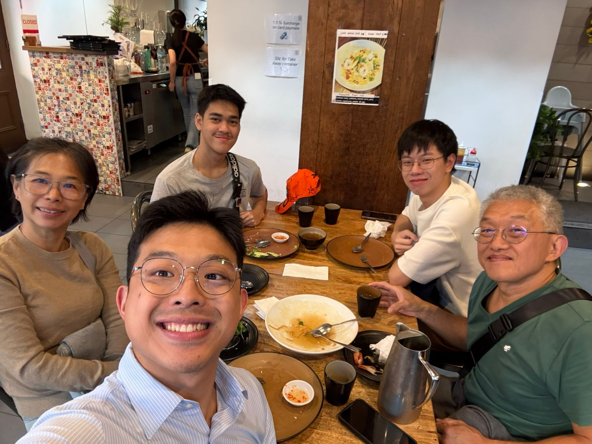
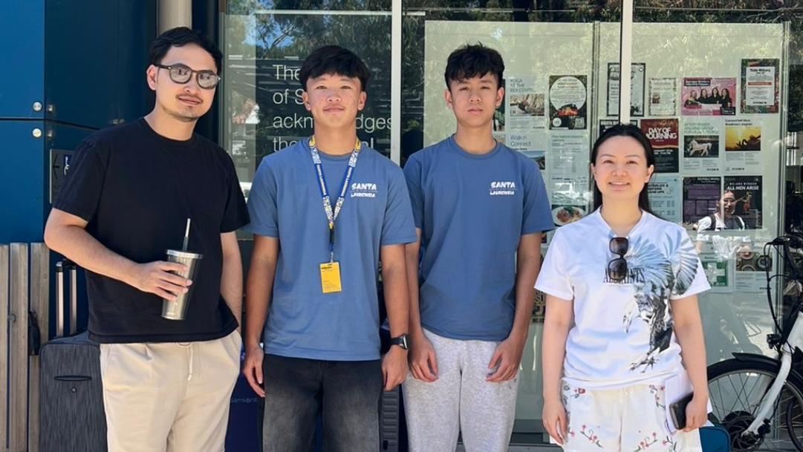

No Hotel No Problem

Noah Alexander Mahar
During our edutrip in Sydney, We didnt stay at a hotel, but instead we stay at local residence. Living with host parents gave me bunch of new experiences of daily life in australia. They act like real parents where they make food and care about our health, helped me adapt to the environment, and made me feel safe throughout the trip

Clayton Setiabudi
First time I met my host parents, I was immedietly greeted with warmth and comfort. They are very welcoming and they are very happy to have me. Throughout the trip they guide me with everything about sydney like, foods, public transport, rules, and much more. My host parents have a vietnamese background so I was able to try authentic vietnamese foods. Even though the language barrier slows my connection with the grandma I was able to use sign language to communicate with the grandma.